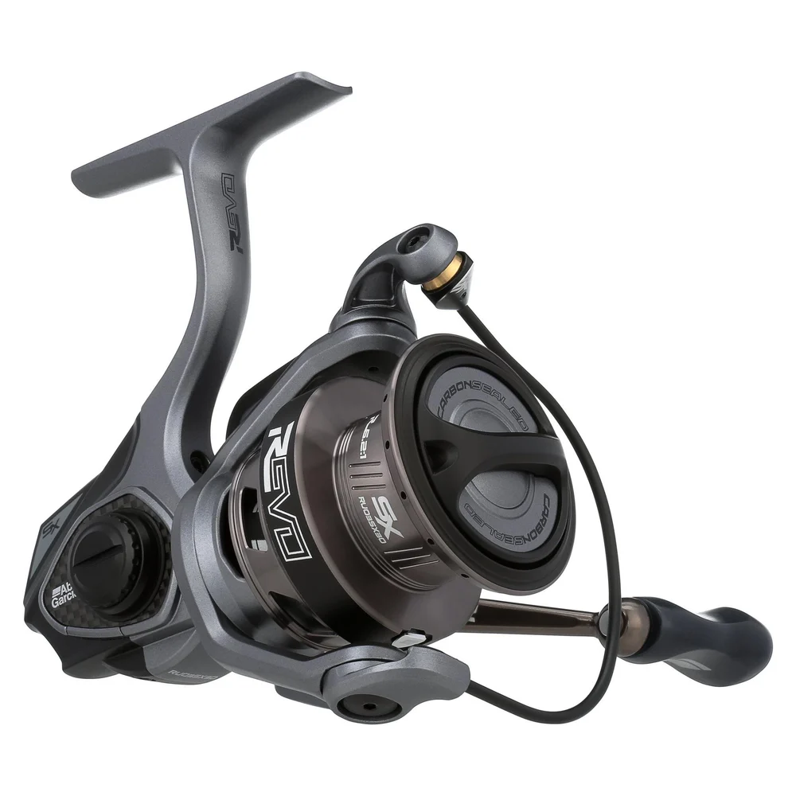

ReelCalc Reel Setup Guide
Abu Garcia Revo SX Spinning 30 Line Capacity & Reel Setup Guide
The Abu Garcia Revo SX Spinning 30 (REVO3 SX SP30) is a 30-size spinning reel. It weighs 7.8 oz, brings in 35 inches of line with each handle turn, and has a listed maximum drag of 11 lb. Match your main line and leader to the fish and structure you expect to encounter. Explore line options below, then use this reel's preloaded calculator for either a full spool of main line or a setup with backing underneath.